Full list also on Google scholar
2024
-
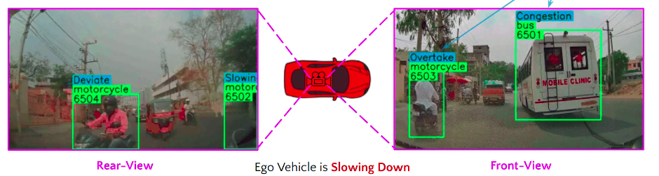
IDD-X: A Multi-View Dataset for Ego-relative Important Object Localization and Explanation in Dense and Unstructured Traffic [ORAL]
Chirag Parikh, Rohit Saluja, C. V. Jawahar, Ravi Kiran Sarvadevabhatla
In IEEE International Conference on Robotics and Automation (ICRA) , 2024
A large-scale dataset and deep networks for understanding and explainability of Indian road driving scenarios.
Paper Abstract Project pageIntelligent vehicle systems require a deep understanding of the interplay between road conditions, surrounding entities, and the ego vehicle's driving behavior for safe and efficient navigation. This is particularly critical in developing countries where traffic situations are often dense and unstructured with heterogeneous road occupants. Existing datasets, predominantly geared towards structured and sparse traffic scenarios, fall short of capturing the complexity of driving in such environments. To fill this gap, we present IDD-X, a large-scale dual-view driving video dataset. With 697K bounding boxes, 9K important object tracks, and 1-12 objects per video, IDD-X offers comprehensive ego-relative annotations for multiple important road objects covering 10 categories and 19 explanation label categories. The dataset also incorporates rearview information to provide a more complete representation of the driving environment. We also introduce custom-designed deep networks aimed at multiple important object localization and per-object explanation prediction. Overall, our dataset and introduced prediction models form the foundation for studying how road conditions and surrounding entities affect driving behavior in complex traffic situations.

-

MAdVerse: A Hierarchical Dataset of Multi-Lingual Ads from Diverse Sources and Categories
Amruth Sagar, Rishabh Srivastava , Rakshitha R. T. , Venkata Kesav Venna , Ravi Kiran Sarvadevabhatla
In IEEE Winter Conference on Applications of Computer Vision (WACV) , 2024
A hierarchical, multi-source, multi-lingual compilation of more than 50,000 ads from the web, social media websites, and e-newspapers.
Paper Abstract Project pageThe convergence of computer vision and advertising has sparked substantial interest lately. Existing advertisement datasets often derive from subsets of established data with highly specialized annotations or feature diverse annotations without a cohesive taxonomy among ad images. Notably, no datasets encompass diverse advertisement styles or semantic grouping at various levels of granularity for a better understanding of ads. Our work addresses this gap by introducing MAdVerse, an extensive, multilingual compilation of more than 50,000 ads from the web, social media websites, and e-newspapers. Advertisements are hierarchically grouped with uniform granularity into 11 categories, divided into 51 sub-categories, and 524 finegrained brands at leaf level, each featuring ads in various languages. Furthermore, we provide comprehensive baseline classification results for various pertinent prediction tasks within the realm of advertising analysis. Specifically, these tasks include hierarchical ad classification, source classification, multilingual classification, and inducing hierarchy in existing ad datasets
2023
-
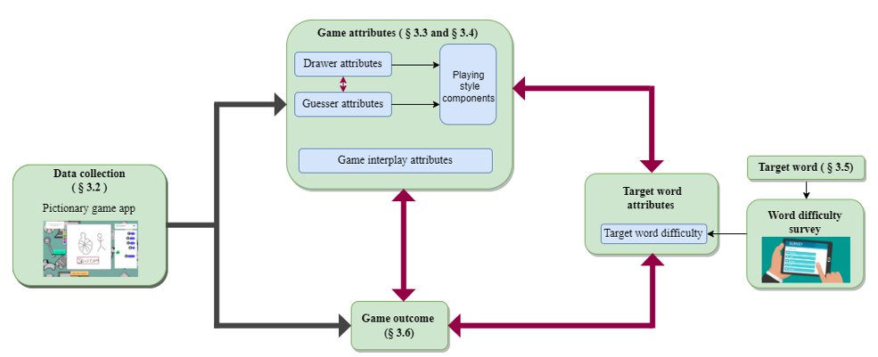
"Draw Fast, Guess Slow": Characterizing Interactions in Cooperative Partially Observable Settings with Online Pictionary as a Case Study
Kiruthika Kannan, Anandhini Rajendran, Vinoo Alluri, Ravi Kiran Sarvadevabhatla
In Human-Computer Interaction – INTERACT , 2023
Analyzing player types and gameplay styles, effect of target word difficulty in Pictionary
Paper AbstractCooperative human-human communication becomes challenging when restrictions such as difference in communication modality and limited time are imposed. We use the popular cooperative social game Pictionary as an online multimodal test bed to explore the dynamics of human-human interactions in such settings. As a part of our study, we identify attributes of player interactions that characterize cooperative gameplay. We found stable and role-specific playing style components that are independent of game difficulty. In terms of gameplay and the larger context of cooperative partially observable communication, our results suggest that too much interaction or unbalanced interaction negatively impacts game success. Additionally, the playing style components discovered via our analysis align with select player personality types proposed in existing frameworks for multiplayer games.
-
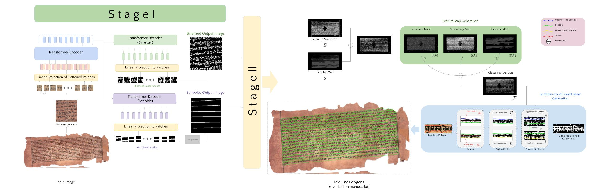
SeamFormer : High Precision Text Line Segmentation for Handwritten Documents
Niharika Vadlamudi, Rahul Krishna, Ravi Kiran Sarvadevabhatla
In The 17th International Conference on Document Analysis and Recognition (ICDAR) , 2023
A novel approach involving a multi-task Transformer and image seam generation using custom energy maps for high precision line segmentation.
Paper Abstract Project pageHistorical manuscripts often contain dense unstructured text lines. The large diversity in sizes, scripts and appearance makes precise text line segmentation extremely challenging. Existing line segmentation approaches often associate diacritic elements incorrectly to text lines and also address above mentioned challenges inadequately. To tackle these issues, we introduce SeamFormer, a novel approach for high precision text line segmentation in handwritten manuscripts. In the first stage of our approach, a multi-task Transformer deep network outputs coarse line identifiers which we term ‘scribbles’ and the binarized manuscript image. In the second stage, a scribble-conditioned seam generation procedure utilizes outputs from first stage and feature maps derived from manuscript image to generate tight-fitting line segmentation polygons. In the process, we incorporate a novel diacritic feature map which enables improved diacritic and text line associations. Via experiments and evaluations on new and existing challenging palm leaf manuscript datasets, we show that SeamFormer outperforms competing approaches and generates precise text line segmentations.
-
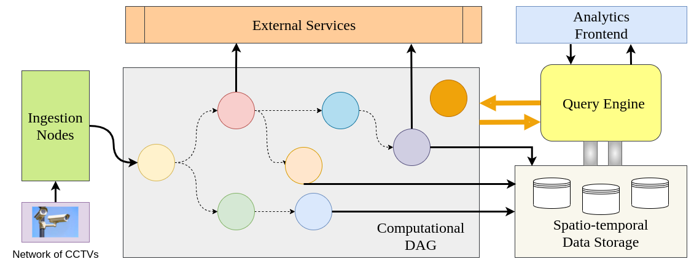
A Cloud-Fog Architecture for Video Analytics on Large Scale Camera Networks Using Semantic Scene Analysis [ORAL]
Kunal Jain, Kishan Sairam Adapa, Kunwar Grover, Ravi Kiran Sarvadevabhatla, Suresh Purini
In IEEE/ACM 23rd International Symposium on Cluster, Cloud and Internet Computing (CCGrid) , 2023
A scalable distributed video analytics framework that can process thousands of video streams from sources such as CCTV cameras using semantic scene analysis.
Paper Abstract Project pageThis paper proposes a scalable distributed video analytics framework that can process thousands of video streams from sources such as CCTV cameras using semantic scene analysis. The main idea is to deploy deep learning pipelines on the fog nodes and generate semantic scene description records (SDRs) of video feeds from the associated CCTV cameras. These SDRs are transmitted to the cloud instead of video frames saving on network bandwidth. Using these SDRs stored on the cloud database, we can answer many complex queries and perform rich video analytics, within extremely low latencies. There is no need to scan and process the video streams again on a per query basis. The software architecture on the fog nodes allows for integrating new deep learning pipelines dynamically into the existing system, thereby supporting novel analytics and queries. We demonstrate the effectiveness of the system by proposing a novel distributed algorithm for real-time vehicle pursuit. The proposed algorithm involves asking multiple spatio-temporal queries in an adaptive fashion to reduce the query processing time and is robust to inaccuracies in the deployed deep learning pipelines and camera failures.
-

F3: Fair and Federated Face Attribute Classification with Heterogeneous Data
Samhita Kanaparthy, Manisha Padala, Sankarshan Damle, Ravi Kiran Sarvadevabhatla, Sujit Gujar
In The Pacific-Asia Conference on Knowledge Discovery and Data Mining (PAKDD) , 2023
A novel federated framework for fair facial attribute classification.
Paper Abstract Project pageFairness across different demographic groups is an essential criterion for face-related tasks, Face Attribute Classification (FAC) being a prominent example. Apart from this trend, Federated Learning (FL) is increasingly gaining traction as a scalable paradigm for distributed training. Existing FL approaches require data homogeneity to ensure fairness. However, this assumption is too restrictive in real-world settings. We propose F3, a novel FL framework for fair FAC under data heterogeneity. F3 adopts multiple heuristics to improve fairness across different demographic groups without requiring data homogeneity assumption. We demonstrate the efficacy of F3 by reporting empirically observed fairness measures and accuracy guarantees on popular face datasets. Our results suggest that F3 strikes a practical balance between accuracy and fairness for FAC.
-
Action-GPT: Leveraging Large-scale Language Models for Improved and Generalized Action Generation [ORAL]
Sai Shashank Kalakonda, Shubh Maheshwari, Ravi Kiran Sarvadevabhatla
In IEEE International Conference on Multimedia & Expo (ICME) , 2023
We show how Large Language Models such as GPT can be used to enable better quality and generalized human action generation
Paper Abstract Project pageWe introduce Action-GPT, a plug-and-play framework for incorporating Large Language Models (LLMs) into text-based action generation models. Action phrases in current motion capture datasets contain minimal and to-the-point information. By carefully crafting prompts for LLMs, we generate richer and fine-grained descriptions of the action. We show that utilizing these detailed descriptions instead of the original action phrases leads to better alignment of text and motion spaces. We introduce a generic approach compatible with stochastic (e.g. VAE-based) and deterministic (e.g. MotionCLIP) text-to-motion models. In addition, the approach enables multiple text descriptions to be utilized. Our experiments show (i) noticeable qualitative and quantitative improvement in the quality of synthesized motions, (ii) benefits of utilizing multiple LLM-generated descriptions, (iii) suitability of the prompt function, and (iv) zero-shot generation capabilities of the proposed approach.
-

DSAG: A Scalable Deep Framework for Action-Conditioned Multi-Actor Full Body Motion Synthesis
Debtanu Gupta, Shubh Maheshwari, Sai Shashank Kalakonda, Manasvi Vaidyula, Ravi Kiran Sarvadevabhatla
In IEEE Winter Conference on Applications of Computer Vision (WACV) , 2023
Scaling human action generation to multiple action categories, action durations and with fine-grained finger-level realism.
Paper Abstract Project pageWe introduce DSAG, a controllable deep neural frame- work for action-conditioned generation of full body multi- actor variable duration actions. To compensate for incom- pletely detailed finger joints in existing large-scale datasets, we introduce full body dataset variants with detailed fin- ger joints. To overcome shortcomings in existing genera- tive approaches, we introduce dedicated representations for encoding finger joints. We also introduce novel spatiotem- poral transformation blocks with multi-head self attention and specialized temporal processing. The design choices enable generations for a large range in body joint counts (24 - 52), frame rates (13 - 50), global body movement (in- place, locomotion) and action categories (12 - 120), across multiple datasets (NTU-120, HumanAct12, UESTC, Hu- man3.6M). Our experimental results demonstrate DSAG’s significant improvements over state-of-the-art, its suitabil- ity for action-conditioned generation at scale.
2022
-
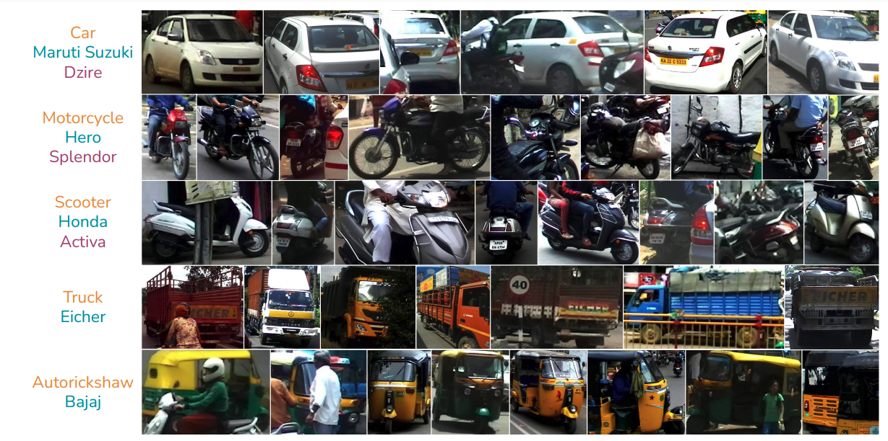
A Fine-Grained Vehicle Detection (FGVD) Dataset for Unconstrained Roads
Prafful Kumar Khoba, Chirag Parikh, Rohit Saluja, Ravi Kiran Sarvadevabhatla, C. V. Jawahar
In Indian Conference on Computer Vision, Graphics and Image Processing (ICVGIP) , 2022
A large-scale fine-grained vehicle dataset for Indian roads.
Paper Abstract Project pageThe previous fine-grained datasets mainly focus on classification and are often captured in a controlled setup, with the camera focusing on the objects. We introduce the first Fine-Grained Vehicle Detection (FGVD) dataset in the wild, captured from a moving camera mounted on a car. It contains 5502 scene images with 210 unique fine-grained labels of multiple vehicle types organized in a three-level hierarchy. While previous classification datasets also include makes for different kinds of cars, the FGVD dataset introduces new class labels for categorizing two-wheelers, autorickshaws, and trucks. The FGVD dataset is challenging as it has vehicles in complex traffic scenarios with intra-class and inter-class variations in types, scale, pose, occlusion, and lighting conditions. The current object detectors like yolov5 and faster RCNN perform poorly on our dataset due to a lack of hierarchical modeling. Along with providing baseline results for existing object detectors on FGVD Dataset, we also present the results of a combination of an existing detector and the recent Hierarchical Residual Network (HRN) classifier for the FGVD task. Finally, we show that FGVD vehicle images are the most challenging to classify among the fine-grained datasets.
-
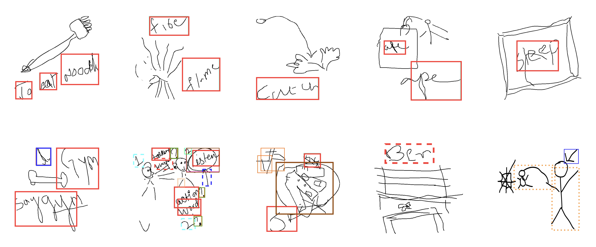
DrawMon: A Distributed System for Detection of Atypical Sketch Content in Concurrent Pictionary Games
Nikhil Bansal, Kartik Gupta, Kiruthika Kannan, Sivani Pentapati, Ravi Kiran Sarvadevabhatla
In ACM Multimedia (ACMMM) , 2022
We introduce a system for detecting atypical whiteboard content in a Pictionary game setting. We also introduce a first of its kind dataset for atypical hand-drawn sketches.
Paper Abstract Project pagePictionary, the popular sketch-based guessing game, provides an opportunity to analyze shared goal cooperative game play in restricted communication settings. However, some players occasionally draw atypical sketch content. While such content is occasionally relevant in the game context, it sometimes represents a rule violation and impairs the game experience. To address such situations in a timely and scalable manner, we introduce DrawMon, a novel distributed framework for automatic detection of atypical sketch content in concurrently occurring Pictionary game sessions. We build specialized online interfaces to collect game session data and annotate atypical sketch content, resulting in AtyPict, the first ever atypical sketch content dataset. We use AtyPict to train CanvasNet, a deep neural atypical content detection network. We utilize CanvasNet as a core component of DrawMon. Our analysis of post deployment game session data indicates DrawMon's effectiveness for scalable monitoring and atypical sketch content detection. Beyond Pictionary, our contributions also serve as a design guide for customized atypical content response systems involving shared and interactive whiteboards.
-
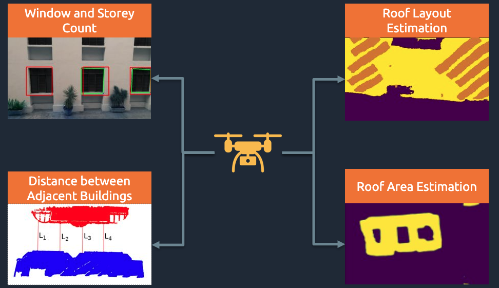
UAV-based Visual Remote Sensing for Automated Building Inspection [ORAL]
Kushagra Srivastava, Dhruv Patel, Aditya Kumar Jha, Mohhit Kumar Jha, Jaskirat Singh, Ravi Kiran Sarvadevabhatla, Pradeep Kumar Ramancharla, Harikumar Kandath, K. Madhava Krishna
In CVCIE Workshop at ECCV , 2022
UVRSABI is a software suite which processes drone-based imagery. It aids assessment of earthquake risk for buildings at scale.
Paper Abstract Project pageUnmanned Aerial Vehicle (UAV) based remote sensing system incorporated with computer vision has demonstrated potential for assisting building construction and in disaster management like damage assessment during earthquakes. The vulnerability of a building to earthquake can be assessed through inspection that takes into account the expected damage progression of the associated component and the component's contribution to structural system performance. Most of these inspections are done manually, leading to high utilization of manpower, time, and cost. This paper proposes a methodology to automate these inspections through UAV-based image data collection and a software library for post-processing that helps in estimating the seismic structural parameters. The key parameters considered here are the distances between adjacent buildings, building plan-shape, building plan area, objects on the rooftop and rooftop layout. The accuracy of the proposed methodology in estimating the above-mentioned parameters is verified through field measurements taken using a distance measuring sensor and also from the data obtained through Google Earth.
-
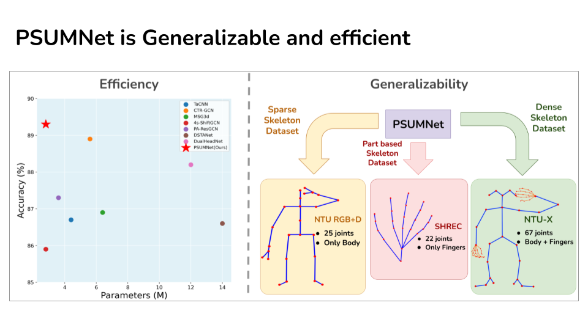
PSUMNet: Unified Modality Part Streams are All You Need for Efficient Pose-based Action Recognition
Neel Trivedi, Ravi Kiran Sarvadevabhatla
In ECCV INTERNATIONAL WORKSHOP AND CHALLENGE ON PEOPLE ANALYSIS , 2022
PSUMNet is a deep net for scalable & efficient action recognition. It outperforms competing methods which use 100%-400% more params. PSUMNet is an attractive choice for deployment on compute-restricted embedded and edge devices.
Paper Abstract Project pagePose-based action recognition is predominantly tackled by approaches which treat the input skeleton in a monolithic fashion, i.e. joints in the pose tree are processed as a whole. However, such approaches ignore the fact that action categories are often characterized by localized action dynamics involving only small subsets of part joint groups involving hands (e.g. `Thumbs up') or legs (e.g. `Kicking'). Although part-grouping based approaches exist, each part group is not considered within the global pose frame, causing such methods to fall short. Further, conventional approaches employ independent modality streams (e.g. joint, bone, joint velocity, bone velocity) and train their network multiple times on these streams, which massively increases the number of training parameters. To address these issues, we introduce PSUMNet, a novel approach for scalable and efficient pose-based action recognition. At the representation level, we propose a global frame based part stream approach as opposed to conventional modality based streams. Within each part stream, the associated data from multiple modalities is unified and consumed by the processing pipeline. Experimentally, PSUMNet achieves state of the art performance on the widely used NTURGB+D 60/120 dataset and dense joint skeleton dataset NTU 60-X/120-X. PSUMNet is highly efficient and outperforms competing methods which use 100%-400% more parameters. PSUMNet also generalizes to the SHREC hand gesture dataset with competitive performance. Overall, PSUMNet's scalability, performance and efficiency makes it an attractive choice for action recognition and for deployment on compute-restricted embedded and edge devices.
-

FLOAT: Factorized Learning of Object Attributes for Improved Multi-object Multi-part Scene Parsing
Rishubh Singh, Pranav Gupta, Pradeep Shenoy, Ravi Kiran Sarvadevabhatla
In Computer Vision and Pattern Recognition (CVPR) , 2022
A simple but effective trick for scalable multi-part multi-object segmentation -- transform label-text attributes into spatial maps and have a deep network predict them.
Paper Abstract Project pageMulti-object multi-part scene parsing is a challenging task which requires detecting multiple object classes in a scene and segmenting the semantic parts within each object. In this paper, we propose FLOAT, a factorized label space framework for scalable multi-object multi-part parsing. Our framework involves independent dense prediction of object category and part attributes which increases scalability and reduces task complexity compared to the monolithic label space counterpart. In addition, we propose an inference-time 'zoom' refinement technique which significantly improves segmentation quality, especially for smaller objects/parts. Compared to state of the art, FLOAT obtains an absolute improvement of 2.0% for mean IOU (mIOU) and 4.8% for segmentation quality IOU (sqIOU) on the Pascal-Part-58 dataset. For the larger Pascal-Part-108 dataset, the improvements are 2.1% for mIOU and 3.9% for sqIOU. We incorporate previously excluded part attributes and other minor parts of the Pascal-Part dataset to create the most comprehensive and challenging version which we dub Pascal-Part-201. FLOAT obtains improvements of 8.6% for mIOU and 7.5% for sqIOU on the new dataset, demonstrating its parsing effectiveness across a challenging diversity of objects and parts.
-
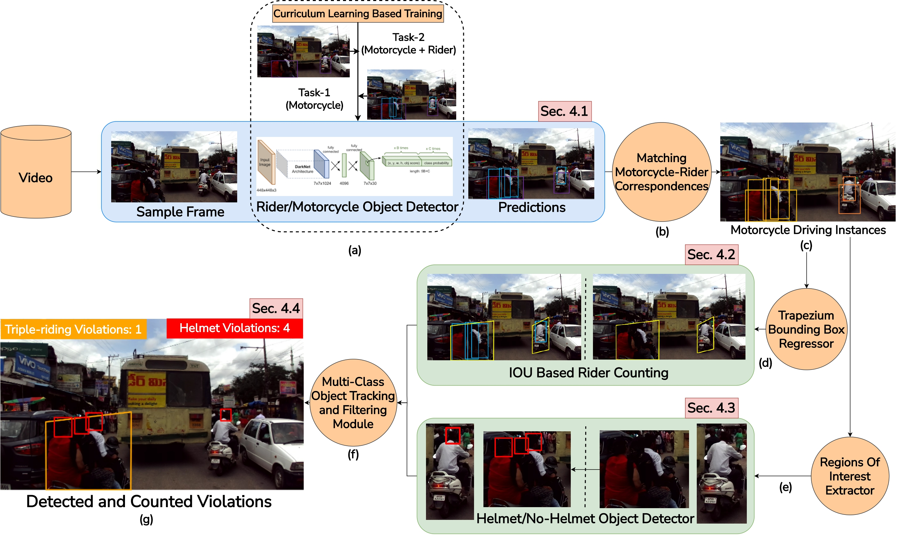
Detecting, Tracking and Counting Motorcycle Rider Traffic Violations on Unconstrained Roads
Aman Goyal, Dev Agarwal, Anbumani Subramanian, C.V. Jawahar, Ravi Kiran Sarvadevabhatla, Rohit Saluja
In 5th Workshop and Prize Challenge: Bridging the Gap between Computational Photography and Visual Recognition (UG2+) , CVPR , 2022
A curriculum learning approach for detecting, tracking, and counting motorcycle riding violations in videos taken from a vehicle-mounted dashboard camera
Paper Abstract Project pageIn many Asian countries with unconstrained road traffic conditions, driving violations such as not wearing helmets and triple-riding are a significant source of fatalities involving motorcycles. Identifying and penalizing such riders is vital in curbing road accidents and improving citizens' safety. With this motivation, we propose an approach for detecting, tracking, and counting motorcycle riding violations in videos taken from a vehicle-mounted dashboard camera. We employ a curriculum learning-based object detector to better tackle challenging scenarios such as occlusions. We introduce a novel trapezium-shaped object boundary representation to increase robustness and tackle the rider-motorcycle association. We also introduce an amodal regressor that generates bounding boxes for the occluded riders. Experimental results on a large-scale unconstrained driving dataset demonstrate the superiority of our approach compared to existing approaches and other ablative variants.
-
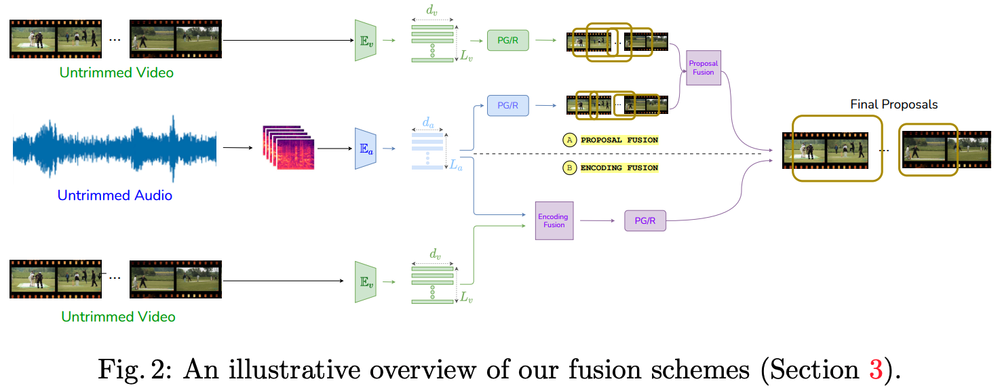
Hear Me out: Fusional Approaches for Audio Augmented Temporal Action Localization [ORAL]
Anurag Bagchi, Jazib Mahmood, Dolton Fernandes, Ravi Kiran Sarvadevabhatla
In 17th International Conference on Computer Vision Theory and Applications (VISAPP) , 2022
A simple yet effective approach for incorporating audio to improve temporal action localization in videos
Paper Abstract Project pageState of the art architectures for untrimmed video Temporal Action Localization (TAL) have only considered RGB and Flow modalities, leaving the information-rich audio modality totally unexploited. Audio fusion has been explored for the related but arguably easier problem of trimmed (clip-level) action recognition. However, TAL poses a unique set of challenges. In this paper, we propose simple but effective fusion-based approaches for TAL. To the best of our knowledge, our work is the first to jointly consider audio and video modalities for supervised TAL. We experimentally show that our schemes consistently improve performance for state of the art video-only TAL approaches. Specifically, they help achieve new state of the art performance on large-scale benchmark datasets - ActivityNet-1.3 (54.34 mAP@0.5) and THUMOS14 (57.18 mAP@0.5). Our experiments include ablations involving multiple fusion schemes, modality combinations and TAL architectures.
-
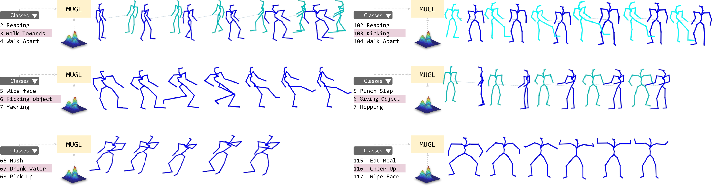
MUGL: Large Scale Multi Person Conditional Action Generation with Locomotion [ORAL]
Shubh Maheshwari, Debtanu Gupta, Ravi Kiran Sarvadevabhatla
In IEEE Winter Conference on Applications of Computer Vision (WACV) , 2022
A novel deep neural model for large-scale, diverse generation of single and multi-person pose-based action sequences with locomotion. Our controllable approach enables variable-length generations customizable by action category, across more than 100 categories.
Paper Abstract Project pageWe introduce MUGL, a novel deep neural model for large-scale, diverse generation of single and multi-person pose-based action sequences with locomotion. Our controllable approach enables variable-length generations customizable by action category, across more than 100 categories. To enable intra/inter-category diversity, we model the latent generative space using a Conditional Gaussian Mixture Variational Autoencoder. To enable realistic generation of actions involving locomotion, we decouple local pose and global trajectory components of the action sequence. We incorporate duration-aware feature representations to enable variable-length sequence generation. We use a hybrid pose sequence representation with 3D pose sequences sourced from videos and 3D Kinect-based sequences of NTU-RGBD-120. To enable principled comparison of generation quality, we employ suitably modified strong baselines during evaluation. Although smaller and simpler compared to baselines, MUGL provides better quality generations, paving the way for practical and controllable large-scale human action generation.
2021
-
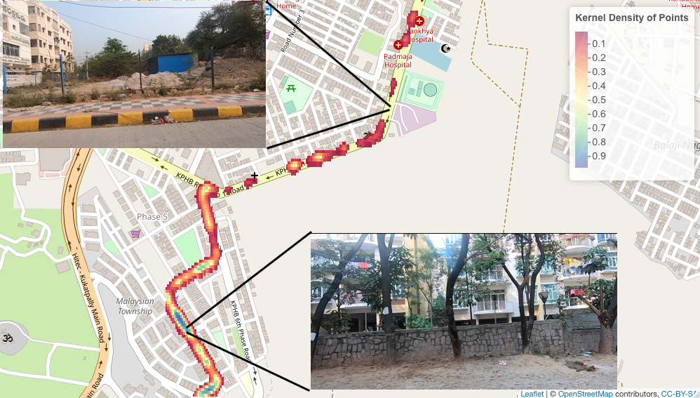
Automatic quantification and visualization of street trees
Arpit Bahety, Rohit Saluja, Ravi Kiran Sarvadevabhatla, Anbumani Subramanian, C. V. Jawahar
In Indian Conference on Computer Vision, Graphics and Image Processing (ICVGIP) , 2021
A street tree detection, counting, and visualization framework.
Paper Abstract Project pageAssessing the number of street trees is essential for evaluating urban greenery and can help municipalities employ solutions to identify tree-starved streets. It can also help identify roads with different levels of deforestation and afforestation over time. Yet, there has been little work in the area of street trees quantification. This work first explains a data collection setup carefully designed for counting roadside trees. We then describe a unique annotation procedure aimed at robustly detecting and quantifying trees. We work on a dataset of around 1300 Indian road scenes annotated with over 2500 street trees. We additionally use the five held-out videos covering 25 km of roads for counting trees. We finally propose a street tree detection, counting, and visualization framework using current object detectors and a novel yet simple counting algorithm owing to the thoughtful collection setup. We find that the high-level visualizations based on the density of trees on the routes and Kernel Density Ranking (KDR) provide a quick, accurate, and inexpensive way to recognize tree-starved streets. We obtain a tree detection mAP of 83.74% on the test images, which is a 2.73% improvement over our baseline. We propose Tree Count Density Classification Accuracy (TCDCA) as an evaluation metric to measure tree density. We obtain TCDCA of 96.77% on the test videos, with a remarkable improvement of 22.58% over baseline, and demonstrate that our counting module's performance is close to human level. Source code: https://github.com/iHubData-Mobility/public-tree-counting.
-
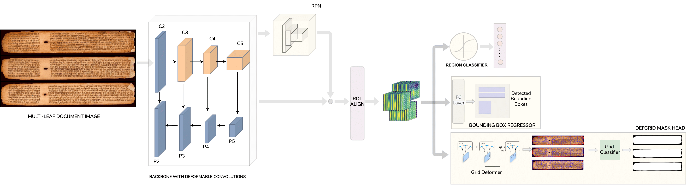
Deformable deep networks for instance segmentation of overlapping multi page handwritten documents [ORAL]
Sowmya Aitha, Sindhu Bollampalli, Ravi Kiran Sarvadevabhatla
In Indian Conference on Computer Vision, Graphics and Image Processing (ICVGIP) , 2021
A deep network to segment handwritten manuscripts which are scanned into a single image.
Paper Abstract Project pageDigitizing via scanning the physical artifact often forms the first primary step in preserving historical handwritten manuscripts. To maximally utilize scanner surface area and minimize manual labor, multiple manuscripts are usually scanned together into a scanned image. Therefore, the first crucial task in manuscript content understanding is to ensure that each of the individual manuscripts within a scanned image can be isolated (segmented) on a per-instance basis. Existing deep network based approaches for manuscript layout understanding implicitly assume a single or two manuscripts per image. Since this assumption may be routinely violated, there is a need for a precursor system which extracts individual manuscripts before downstream processing. Another challenge is the highly curved and deformed boundaries of manuscripts, causing them to often overlap with each other. To tackle such challenges, we introduce a new document image dataset called IMMI (Indic Multi Manuscript Images). To improve the efficiency of dataset and aid deep network training, we also propose an approach which generates synthetic images to augment sourced non-synthetic images. We conduct experiments using modified versions of existing document instance segmentation frameworks. The results demonstrate the efficacy of the new frameworks for the task. Overall, our contributions enable robust extraction of individual historical manuscript pages. This in turn, could potentially enable better performance on downstream tasks such as region-level instance segmentation within handwritten manuscripts and optical character recognition.
-
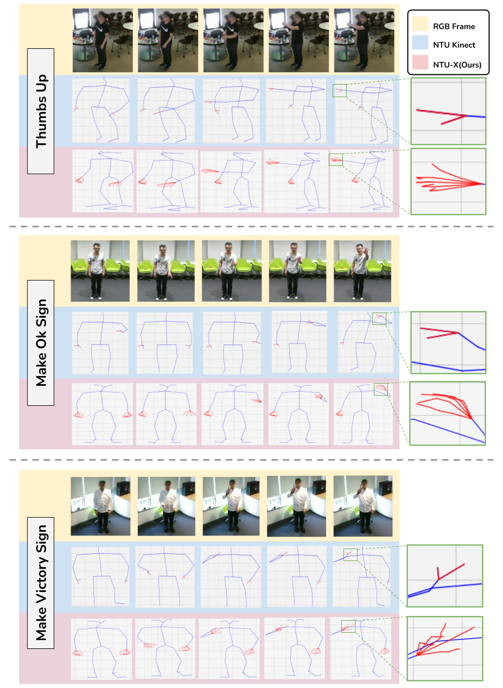
NTU-X: an enhanced large-scale dataset for improving pose-based recognition of subtle human actions [ORAL]
Neel Trivedi, Anirudh Thatipelli, Ravi Kiran Sarvadevabhatla
In Indian Conference on Computer Vision, Graphics and Image Processing (ICVGIP) , 2021
The lack of fine-grained joints (facial joints, hand fingers) is a fundamental performance bottleneck for state of the art skeleton action recognition models. To specifically address this bottleneck, we introduce two new pose based human action datasets - NTU60-X and NTU120-
Paper Abstract Project pageThe lack of fine-grained joints (facial joints, hand fingers) is a fundamental performance bottleneck for state of the art skeleton action recognition models. Despite this bottleneck, community's efforts seem to be invested only in coming up with novel architectures. To specifically address this bottleneck, we introduce two new pose based human action datasets - NTU60-X and NTU120-X. Our datasets extend the largest existing action recognition dataset, NTU-RGBD. In addition to the 25 body joints for each skeleton as in NTU-RGBD, NTU60-X and NTU120-X dataset includes finger and facial joints, enabling a richer skeleton representation. We appropriately modify the state of the art approaches to enable training using the introduced datasets. Our results demonstrate the effectiveness of these NTU-X datasets in overcoming the aforementioned bottleneck and improve state of the art performance, overall and on previously worst performing action categories.
-
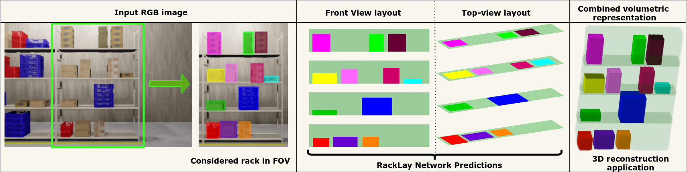
RackLay: Multi-Layer Layout Estimation for Warehouse Racks. [ORAL]
Meher Shashwat Nigam, Avinash Prabhu, Anurag Sahu, Puru Gupta, Tanvi Karandikar, N. Sai Shankar, Ravi Kiran Sarvadevabhatla, K. Madhava Krishna
In Indian Conference on Computer Vision, Graphics and Image Processing (ICVGIP) , 2021
Given a monocular colour image of a warehouse rack, we aim to predict the bird's-eye view layout for each shelf in the rack, which we term as multi-layer layout prediction. We also show that fusing the top-view and front-view enables 3D reasoning applications such as metric free space estimation for the considered rack.
Paper Abstract Project pageGiven a monocular colour image of a warehouse rack, we aim to predict the bird's-eye view layout for each shelf in the rack, which we term as multi-layer layout prediction. To this end, we present RackLay, a deep neural network for real-time shelf layout estimation from a single image. Unlike previous layout estimation methods, which provide a single layout for the dominant ground plane alone, RackLay estimates the top-view and front-view layout for each shelf in the considered rack populated with objects. RackLay's architecture and its variants are versatile and estimate accurate layouts for diverse scenes characterized by varying number of visible shelves in an image, large range in shelf occupancy factor and varied background clutter. Given the extreme paucity of datasets in this space and the difficulty involved in acquiring real data from warehouses, we additionally release a flexible synthetic dataset generation pipeline WareSynth which allows users to control the generation process and tailor the dataset according to contingent application. The ablations across architectural variants and comparison with strong prior baselines vindicate the efficacy of RackLay as an apt architecture for the novel problem of multi-layered layout estimation. We also show that fusing the top-view and front-view enables 3D reasoning applications such as metric free space estimation for the considered rack.
-
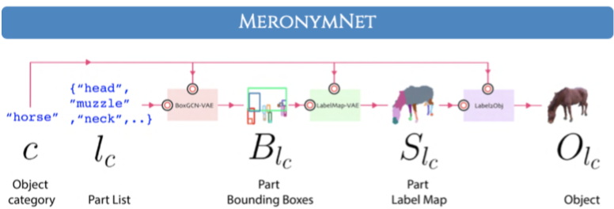
MeronymNet: A Hierarchical Model for Unified and Controllable Multi-Category Object Generation [ORAL]
Rishabh Baghel, Abhishek Trivedi, Tejas Ravichandran, Ravi Kiran Sarvadevabhatla
In ACM International Conference on Multimedia (ACMMM) , 2021
Invited for presentation at ICCV 2021 workshop on Structural and Compositional Learning on 3D Data and ICCV 2021 workshop on Learning 3D Representations for Shape and Appearance
We present the first ever part and category controllable generative model for 2D object sprites.
Paper Abstract Project pageWe introduce MeronymNet, a novel hierarchical approach for controllable, part-based generation of multi-category objects using a single unified model. We adopt a guided coarse-to-fine strategy involving semantically conditioned generation of bounding box layouts, pixel-level part layouts and ultimately, the object depictions themselves. We use Graph Convolutional Networks, Deep Recurrent Networks along with custom-designed Conditional Variational Autoencoders to enable flexible, diverse and category-aware generation of 2-D objects in a controlled manner. The performance scores for generated objects reflect MeronymNet's superior performance compared to multiple strong baselines and ablative variants. We also showcase MeronymNet's suitability for controllable object generation and interactive object editing at various levels of structural and semantic granularity.
-
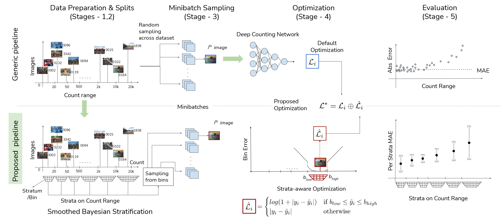
Wisdom of (Binned) Crowds: A Bayesian Stratification Paradigm for Crowd Counting
Sravya Vardhani Shivapuja, Mansi Pradeep Khamkar, Divij Bajaj, Ganesh Ramakrishnan, Ravi Kiran Sarvadevabhatla
In ACM International Conference on Multimedia (ACMMM) , 2021
Not the paper crowd counting community seems to want, but one it needs right now ! To address serious issues with training and evaluation of deep networks for crowd counting, we revamp the entire processing pipeline (sampling, optimization, evaluation) and propose a new paradigm.
Paper Abstract Project pageDatasets for training crowd counting deep networks are typically heavy-tailed in count distribution and exhibit discontinuities across the count range. As a result, the de facto statistical measures (MSE, MAE) exhibit large variance and tend to be unreliable indicators of performance across the count range. To address these concerns in a holistic manner, we revise processes at various stages of the standard crowd counting pipeline. To enable principled and balanced minibatch sampling, we propose a novel smoothed Bayesian sample stratification approach. We propose a novel cost function which can be readily incorporated into existing crowd counting deep networks to encourage strata-aware optimization. We analyze the performance of representative crowd counting approaches across standard datasets at per strata level and in aggregate. We analyze the performance of crowd counting approaches across standard datasets and demonstrate that our proposed modifications noticeably reduce error standard deviation. Our contributions represent a nuanced, statistically balanced and fine-grained characterization of performance for crowd counting approaches.
-

MediTables: A New Dataset and Deep Network for Multi-category Table Localization in Medical Documents
Akshay Praveen Deshpande, Vaishnav Rao Potlapalli, Ravi Kiran Sarvadevabhatla
In The 14th IAPR International Workshop on Graphics Recognition (GREC), 2021
Meditables is a 200 image camera-captured dataset of medical reports with table annotations. We also introduce a simple, compact deep network for parsing tabular structures in such documents.
Paper Abstract Project pageLocalizing structured layout components such as tables is an important task in document image analysis. Numerous layout datasets with document images from various domains exist. However, healthcare and medical documents represent a crucial domain that has not been included so far. To address this gap, we contribute MediTables, a new dataset of 200 diverse medical document images with multi-category table annotations. Meditables contains a wide range of medical document images with variety in capture quality, layouts, skew, occlusion and illumination. The dataset images include pathology, diagnostic and hospital-related reports. In addition to document diversity, the dataset includes implicitly structured tables that are typically not present in other datasets. We benchmark state of the art table localization approaches on the MediTables dataset and introduce a custom-designed U-Net which exhibits robust performance while being drastically smaller in size compared to strong baselines. Our annotated dataset and models represent a useful first step towards the development of focused systems for medical document image analytics, a domain that mandates robust systems for reliable information retrieval. The dataset and models can be accessed at https://github.com/atmacvit/meditables.
-

DocVisor: A Multi-purpose Web-Based Interactive Visualizer for Document Image Analytics
Khadiravana Belagavi,Pranav Tadimeti,Ravi Kiran Sarvadevabhatla
In 3rd ICDAR Workshop on Open Services and Tools for Document Analysis (ICDAR-OST) , 2021
Our new web-based visualizer for image annotations and metric sorted deep network predictions.
Paper Abstract Project pageThe performance for many document-based problems (OCR, Document Layout Segmentation, etc.) is typically studied in terms of a single aggregate performance measure (Intersection-Over-Union, Character Error Rate, etc.). While useful, the aggregation is a trade-off between instance-level analysis of predictions which may shed better light on a particular approach’s biases and performance characteristics. To enable a systematic understanding of instance-level predictions, we introduce DocVisor - a web-based multi-purpose visualization tool for analyzing the data and predictions related to various document image understanding problems. DocVisor provides support for visualizing data sorted using custom-specified performance metrics and display styles. It also supports the visualization of intermediate outputs (e.g., attention maps, coarse predictions) of the processing pipelines. This paper describes the appealing features of DocVisor and showcases its multi-purpose nature and general utility. We illustrate DocVisor’s functionality for four popular document understanding tasks – document region layout segmentation, tabular data detection, weakly-supervised document region segmentation and optical character recognition. DocVisor is available as a documented public repository for use by the community.
-

BoundaryNet - An Attentive Deep Network with Fast Marching Distance Maps for Semi-automatic Layout Annotation [ORAL]
Abhishek Trivedi, Ravi Kiran Sarvadevabhatla
In International Conference on Document Analysis and Recognition (ICDAR) , 2021
A novel resizing-free approach for high-precision semi-automatic layout annotation.
Paper Abstract Project pageIn this work, we propose BoundaryNet, a novel resizing-free approach for high-precision semi-automatic layout annotation. The variable-sized user selected region of interest is first processed by an attention-guided skip network. The network optimization is guided via Fast Marching distance maps to obtain a good quality initial boundary estimate and an associated feature representation. These outputs are processed by a Residual Graph Convolution Network optimized using Hausdorff loss to obtain the final region boundary. Results on a challenging image manuscript dataset demonstrate that BoundaryNet outperforms strong baselines and produces high-quality semantic region boundaries. Qualitatively, our approach generalizes across multiple document image datasets containing different script systems and layouts, all without additional fine-tuning.
-
PALMIRA: A Deep Deformable Network for Instance Segmentation of Dense and Uneven Layouts in Handwritten Manuscripts
Sharan, S P and Aitha, Sowmya and Amandeep, Kumar and Trivedi, Abhishek and Augustine, Aaron and Sarvadevabhatla, Ravi Kiran
In International Conference on Document Analysis and Recognition (ICDAR) , 2021
Introducing (1) Indiscapes2 handwritten manuscript layout dataset - 150% larger than its predecessor Indiscapes (2) PALMIRA - a novel deep network for instance segmentation of handwritten documents with dense and uneven layouts.
Paper Abstract Project pageHandwritten documents are often characterized by dense and uneven layout. Despite advances, standard deep network based approaches for semantic layout segmentation are not robust to complex deformations seen across semantic regions. This phenomenon is especially pronounced for the low-resource Indic palm-leaf manuscript domain. To address the issue, we first introduce Indiscapes2, a new large-scale diverse dataset of Indic manuscripts with semantic layout annotations. Indiscapes2 contains documents from four different historical collections and is 150% larger than its predecessor, Indiscapes. We also propose a novel deep network Palmira for robust, deformation-aware instance segmentation of regions in handwritten manuscripts. We also report Hausdorff distance and its variants as a boundary-aware performance measure. Our experiments demonstrate that Palmira provides robust layouts, outperforms strong baseline approaches and ablative variants. We also include qualitative results on Arabic, South-East Asian and Hebrew historical manuscripts to showcase the generalization capability of Palmira.
-

Syntactically Guided Generative Embeddings for Zero Shot Skeleton Action Recognition
Pranay Gupta, Divyanshu Sharma, Ravi Kiran Sarvadevabhatla
In IEEE International Conference on Image Processing (ICIP) , 2021
We propose a language-guided approach to enable state of the art performance for the challenging problem of Zero Shot Recognition of human actions.
Paper Abstract Project pageWe introduce SynSE, a novel syntactically guided generative approach for Zero-Shot Learning (ZSL). Our end-to-end approach learns progressively refined generative embedding spaces constrained within and across the involved modalities (visual, language). The inter-modal constraints are defined between action sequence embedding and embeddings of Parts of Speech (PoS) tagged words in the corresponding action description. We deploy SynSE for the task of skeleton-based action sequence recognition. Our design choices enable SynSE to generalize compositionally, i.e., recognize sequences whose action descriptions contain words not encountered during training. We also extend our approach to the more challenging Generalized Zero-Shot Learning (GZSL) problem via a confidence-based gating mechanism. We are the first to present zero-shot skeleton action recognition results on the large-scale NTU-60 and NTU-120 skeleton action datasets with multiple splits. Our results demonstrate SynSE's state of the art performance in both ZSL and GZSL settings compared to strong baselines on the NTU-60 and NTU-120 datasets.
-
Quo Vadis, Skeleton Action Recognition ?
Pranay Gupta, Anirudh Thatipelli, Aditya Aggarwal, Shubh Maheshwari, Neel Trivedi, Sourav Das, Ravi Kiran Sarvadevabhatla
In International Journal of Computer Vision (IJCV) , 2021
In this paper, we study current and upcoming frontiers across the landscape of skeleton-based human action recognition.
Paper Abstract Project pageIn this paper, we study current and upcoming frontiers across the landscape of skeleton-based human action recognition. To begin with, we benchmark state-of-the-art models on the NTU-120 dataset and provide multi-layered assessment of the results. To examine skeleton action recognition 'in the wild', we introduce Skeletics-152, a curated and 3-D pose-annotated subset of RGB videos sourced from Kinetics-700, a large-scale action dataset. The results from benchmarking the top performers of NTU-120 on Skeletics-152 reveal the challenges and domain gap induced by actions 'in the wild'. We extend our study to include out-of-context actions by introducing Skeleton-Mimetics, a dataset derived from the recently introduced Mimetics dataset. Finally, as a new frontier for action recognition, we introduce Metaphorics, a dataset with caption-style annotated YouTube videos of the popular social game Dumb Charades and interpretative dance performances. Overall, our work characterizes the strengths and limitations of existing approaches and datasets. It also provides an assessment of top-performing approaches across a spectrum of activity settings and via the introduced datasets, proposes new frontiers for human action recognition.
-
Early Bird: Loop Closures from Opposing Viewpoints for Perceptually-Aliased Indoor Environments
Satyajit Tourani, Udit Singh Parihar, Dhagash Desai, Sourav Garg, Ravi Kiran Sarvadevabhatla, Michael M. Milford, K. Madhava Krishna
In 16th International Conference on Computer Vision Theory and Applications (VISAPP) , 2021
Enabling loop closure for robotic navigation via an approach which recognizes places from 180 degree opposite viewpoints in highly repetitive environments.
Paper AbstractSignificant advances have been made recently in Visual Place Recognition (VPR), feature correspondence, and localization due to the proliferation of deep-learning-based methods. However, existing approaches tend to address, partially or fully, only one of two key challenges: viewpoint change and perceptual aliasing. In this paper, we present novel research that simultaneously addresses both challenges by combining deep-learned features with geometric transformations based on reasonable domain assumptions about navigation on a ground-plane, whilst also removing the requirement for specialized hardware setup (e.g. lighting, downwards facing cameras). In particular, our integration of VPR with SLAM by leveraging the robustness of deep-learned features and our homography-based extreme viewpoint invariance significantly boosts the performance of VPR, feature correspondence, and pose graph submodules of the SLAM pipeline. For the first time, we demonstrate a localization system capable of state-of-the-art performance despite perceptual aliasing and extreme 180-degree-rotated viewpoint change in a range of real-world and simulated experiments. Our system is able to achieve early loop closures that prevent significant drifts in SLAM trajectories. We also compare extensively several deep architectures for VPR and descriptor matching. We also show that superior place recognition and descriptor matching across opposite views results in a similar performance gain in back-end pose graph optimization.
2020
-
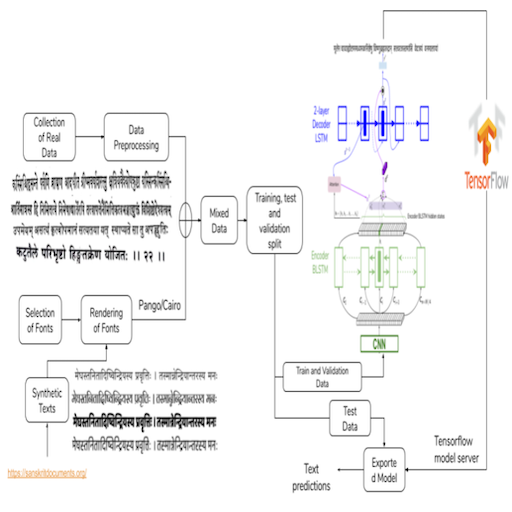
An OCR for Classical Indic Documents Containing Arbitrarily Long Words
Agam Dwivedi, Rohit Saluja, Ravi Kiran Sarvadevabhatla
In CVPR Workshop on Text and Documents in the Deep Learning Era, 2020
Datasets (real, synthetic) and a CNN-LSTM Attention OCR for printed classical Indic documents containing very long words.
Paper Abstract Project pageOCR for printed classical Indic documents written in Sanskrit is a challenging research problem. It involves com- plexities such as image degradation, lack of datasets and long-length words. Due to these challenges, the word ac- curacy of available OCR systems, both academic and in- dustrial, is not very high for such documents. To address these shortcomings, we develop a Sanskrit specific OCR system. We present an attention-based LSTM model for reading Sanskrit characters in line images. We introduce a dataset of Sanskrit document images annotated at line level. To augment real data and enable high performance for our OCR, we also generate synthetic data via curated font se- lection and rendering designed to incorporate crucial glyph substitution rules. Consequently, our OCR achieves a word error rate of 15.97% and a character error rate of 3.71% on challenging Indic document texts and outperforms strong baselines. Overall, our contributions set the stage for ap- plication of OCRs on large corpora of classic Sanskrit texts containing arbitrarily long and highly conjoined words.
-
OPAL-Net: A Generative Model for Part-based Object Layout Generation
Rishabh Baghel, Ravi Kiran Sarvadevabhatla
In arXiv , 2020
A novel hierarchical GCN-VAE for controllable part-based layout generation of objects from multiple categories, all using a single unified model.
Paper Abstract Project pageWe propose OPAL-Net, a novel hierarchical architecture for part-based layout generation of objects from multiple categories using a single unified model. We adopt a coarse-to-fine strategy involving semantically conditioned autoregressive generation of bounding box layouts and pixel-level part layouts for objects. We use Graph Convolutional Networks, Deep Recurrent Networks along with custom-designed Conditional Variational Autoencoders to enable flexible, diverse and category-aware generation of object layouts. We train OPAL-Net on PASCAL-Parts dataset. The generated samples and corresponding evaluation scores demonstrate the versatility of OPAL-Net compared to ablative variants and baselines.
-
Topological Mapping for Manhattan-like Repetitive Environments
Sai Shubodh Puligilla, Satyajit Tourani, Tushar Vaidya, Udit Singh Parihar, Ravi Kiran Sarvadevabhatla, K. Madhava Krishna
In International Conference on Robotics and Automation (ICRA) , 2020
This paper explores the role of topological understanding and benefits of such an understanding to the robot SLAM framework.
Paper Project page AbstractWe showcase a topological mapping framework for a challenging indoor warehouse setting. At the most abstract level, the warehouse is represented as a Topological Graph where the nodes of the graph represent a particular warehouse topological construct (e.g. rackspace, corridor) and the edges denote the existence of a path between two neighbouring nodes or topologies. At the intermediate level, the map is represented as a Manhattan Graph where the nodes and edges are characterized by Manhattan properties and as a Pose Graph at the lower-most level of detail. The topological constructs are learned via a Deep Convolutional Network while the relational properties between topological instances are learnt via a Siamese-style Neural Network. In the paper, we show that maintaining abstractions such as Topological Graph and Manhattan Graph help in recovering an accurate Pose Graph starting from a highly erroneous and unoptimized Pose Graph. We show how this is achieved by embedding topological and Manhattan relations as well as Manhattan Graph aided loop closure relations as constraints in the backend Pose Graph optimization framework. The recovery of near ground-truth Pose Graph on real-world indoor warehouse scenes vindicate the efficacy of the proposed framework.
2019
-
Operator-in-the-Loop Deep Sequential Multi-camera Feature Fusion for Person Re-identification
Navaneet Murthy, Shashank Shekhar, Ravi Kiran Sarvadevabhatla, R. Venkatesh Babu, Anirban Chakraborty
In IEEE Transactions on Information Forensics and Security (IEEE T-IFS) , 2019
An intelligent sequential fusion technique for multi-camera person reidentification (re-id). The approach is designed to not only improve re-id accuracy but to also learn increasingly better feature representations as observations from additional cameras are fused.
Paper AbstractGiven a target image as query, person re-identification systems retrieve a ranked list of candidate matches on a per-camera basis. In deployed systems, a human operator scans these lists and labels sighted targets by touch or mouse-based selection. However, classical re-id approaches generate per-camera lists independently. Therefore, target identifications by operator in a subset of cameras cannot be utilized to improve ranking of the target in remaining set of network cameras. To address this shortcoming, we propose a novel sequential multi-camera re-id approach. The proposed approach can accommodate human operator inputs and provides early gains via a monotonic improvement in target ranking. At the heart of our approach is a fusion function which operates on deep feature representations of query and candidate matches. We formulate an optimization procedure custom-designed to incrementally improve query representation. Since existing evaluation methods cannot be directly adopted to our setting, we also propose two novel evaluation protocols. The results on two large-scale re-id datasets (Market-1501, DukeMTMC-reID) demonstrate that our multi-camera method significantly outperforms baselines and other popular feature fusion schemes. Additionally, we conduct a comparative subject-based study of human operator performance. The superior operator performance enabled by our approach makes a compelling case for its integration into deployable video-surveillance systems.
-
Indiscapes: Instance segmentation networks for layout parsing of historical indic manuscripts [ORAL]
Abhishek Prusty, Aitha Sowmya, Abhishek Trivedi, Ravi Kiran Sarvadevabhatla
In IAPR International Conference on Document Analysis and Recognition (ICDAR) , 2019
We introduce Indiscapes - the largest publicly available layout annotated dataset of historical Indic manuscript images.
Paper Abstract Project pageHistorical palm-leaf manuscript and early paper documents from Indian subcontinent form an important part of the world’s literary and cultural heritage. Despite their importance, large-scale annotated Indic manuscript image datasets do not exist. To address this deficiency, we introduce Indiscapes, the first ever dataset with multi-regional layout annotations for historical Indic manuscripts. To address the challenge of large diversity in scripts and presence of dense, irregular layout elements (e.g. text lines, pictures, multiple documents per image), we adapt a Fully Convolutional Deep Neural Network architecture for fully automatic, instance-level spatial layout parsing of manuscript images. We demonstrate the effectiveness of proposed architecture on images from the OpalNet dataset. For annotation flexibility and keeping the non-technical nature of domain experts in mind, we also contribute a custom, webbased GUI annotation tool and a dashboard-style analytics portal. Overall, our contributions set the stage for enabling downstream applications such as OCR and word-spotting in historical Indic manuscripts at scale.
2018
-
Pictionary-style word-guessing on hand-drawn object sketches: dataset, analysis and deep network models
Ravi Kiran Sarvadevabhatla, Shiv Surya, Trisha Mittal, R. Venkatesh Babu
In IEEE Transactions on Pattern Analysis and Machine Intelligence (TPAMI), 2018
Journal version of the AAAI-18 paper
Paper (Pre-print) Abstract Project page
The ability of intelligent agents to play games in human-like fashion is popularly considered a benchmark of progress in Artificial Intelligence. In our work, we introduce the first computational model aimed at Pictionary, the popular word-guessing social game. We first introduce Sketch-QA, a guessing task. Styled after Pictionary, Sketch-QA uses incrementally accumulated sketch stroke sequences as visual data. Sketch-QA involves asking a fixed question (``What object is being drawn?") and gathering open-ended guess-words from human guessers. We analyze the resulting dataset and present many interesting findings therein. To mimic Pictionary-style guessing, we propose a deep neural model which generates guess-words in response to temporally evolving human-drawn object sketches. Our model even makes human-like mistakes while guessing, thus amplifying the human mimicry factor. We evaluate our model on the large-scale guess-word dataset generated via Sketch-QA task and compare with various baselines. We also conduct a Visual Turing Test to obtain human impressions of the guess-words generated by humans and our model. Experimental results demonstrate the promise of our approach for Pictionary and similarly themed games.
-
Game of Sketches: Deep Recurrent Models of Pictionary-style Word Guessing
Ravi Kiran Sarvadevabhatla, Shiv Surya, Trisha Mittal, R. Venkatesh Babu
In AAAI, 2018
The first-ever deep neural network for mimicking Pictionary-style guessing with object sketches as input.
Paper Abstract Project page Bibtex
The ability of intelligent agents to play games in human-like fashion is popularly considered a benchmark of progress in Artificial Intelligence. Similarly, performance on multi-disciplinary tasks such as Visual Question Answering (VQA) is considered a marker for gauging progress in Computer Vision. In our work, we bring games and VQA together. Specifically, we introduce the first computational model aimed at Pictionary, the popular word-guessing social game. We first introduce Sketch-QA, an elementary version of Visual Question Answering task. Styled after Pictionary, Sketch-QA uses incrementally accumulated sketch stroke sequences as visual data. Notably, Sketch-QA involves asking a fixed question ("What object is being drawn?") and gathering open-ended guess-words from human guessers. We analyze the resulting dataset and present many interesting findings therein. To mimic Pictionary-style guessing, we subsequently propose a deep neural model which generates guess-words in response to temporally evolving human-drawn sketches. Our model even makes human-like mistakes while guessing, thus amplifying the human mimicry factor. We evaluate our model on the large-scale guess-word dataset generated via Sketch-QA task and compare with various baselines. We also conduct a Visual Turing Test to obtain human impressions of the guess-words generated by humans and our model. Experimental results demonstrate the promise of our approach for Pictionary and similarly themed games.
2017
-
SketchParse : Towards Rich Descriptions for Poorly Drawn Sketches using Multi-Task Hierarchical Deep Networks
Ravi Kiran Sarvadevabhatla, Isht Dwivedi, Abhijat Biswas, Sahil Manocha, R. Venkatesh Babu
In ACM Multimedia (ACMMM), 2017
We explore the problem of parsing sketched objects, i.e. given a freehand line sketch of an object, determine its salient attributes (e.g. category, semantic parts, pose). To this end, we propose SketchParse, the first deep-network architecture for fully automatic parsing of freehand object sketches.
Paper Abstract Project page Bibtex
The ability to semantically interpret hand-drawn line sketches, although very challenging, can pave way for novel applications in multimedia. We propose SketchParse, the first deep-network architecture for fully automatic parsing of freehand object sketches. SketchParse is configured as a two-level fully convolutional network. The first level contains shared layers common to all object categories. The second level contains a number of expert sub-networks. Each expert specializes in parsing sketches from object categories which contain structurally similar parts. Effectively, the two-level configuration enables our architecture to scale up efficiently as additional categories are added. We introduce a router layer which (i) relays sketch features from shared layers to the correct expert (ii) eliminates the need to manually specify object category during inference. To bypass laborious part-level annotation, we sketchify photos from semantic object-part image datasets and use them for training. Our architecture also incorporates object pose prediction as a novel auxiliary task which boosts overall performance while providing supplementary information regarding the sketch. We demonstrate SketchParse's abilities (i) on two challenging large-scale sketch datasets (ii) in parsing unseen, semantically related object categories (iii) in improving fine-grained sketch-based image retrieval. As a novel application, we also outline how SketchParse's output can be used to generate caption-style descriptions for hand-drawn sketches.
-
DeLiGAN : Generative Adversarial Networks for Diverse and Limited Data
Gurumurthy SwaminathanRavi Kiran Sarvadevabhatla, R. Venkatesh Babu
In Computer Vision and Pattern Recognition (CVPR), 2017
We propose DeLiGAN -- a novel image generative model for diverse and limited training data scenarios. Across a number of image modalities including hand-drawn sketches, we show that DeLiGAN generates diverse samples. To quantitatively characterize intra-class diversity of generated samples, we also introduce a modified version of "inception-score", a measure found to correlate well with human assessment of generated samples.
Paper Abstract Project page Bibtex
@InProceedings{Gurumurthy_2017_CVPR,
author = {Gurumurthy, Swaminathan and Kiran Sarvadevabhatla, Ravi and Venkatesh Babu, R.},
title = {DeLiGAN : Generative Adversarial Networks for Diverse and Limited Data},
booktitle = {The IEEE Conference on Computer Vision and Pattern Recognition (CVPR)},
month = {July},
year = {2017}
}A class of recent approaches for generating images, called Generative Adversarial Networks (GAN), have been used to generate impressively realistic images of objects, bedrooms, handwritten digits and a variety of other image modalities. However, typical GAN-based approaches require large amounts of training data to capture the diversity across the image modality. In this paper, we propose DeLiGAN -- a novel GAN-based architecture for diverse and limited training data scenarios. In our approach, we reparameterize the latent generative space as a mixture model and learn the mixture model's parameters along with those of GAN. This seemingly simple modification to the GAN framework is surprisingly effective and results in models which enable diversity in generated samples although trained with limited data. In our work, we show that DeLiGAN can generate images of handwritten digits, objects and hand-drawn sketches, all using limited amounts of data. To quantitatively characterize intra-class diversity of generated samples, we also introduce a modified version of "inception-score", a measure which has been found to correlate well with human assessment of generated samples.
-
Object category understanding via eye fixations on freehand sketches
Ravi Kiran Sarvadevabhatla, Sudharshan Suresh, R. Venkatesh Babu
In IEEE Transactions on Image Processing (TIP), 2017
We analyze the results of a free-viewing gaze fixation study conducted on 3904 freehand sketches distributed across 160 object categories. Our analysis shows that fixation sequences exhibit marked consistency within a sketch, across sketches of a category and even across suitably grouped sets of categories. In our paper, we show that this multi-level consistency in the fixation data can be exploited to (a) predict a test sketch's category given only its fixation sequence and (b) build a computational model which predicts part-labels underlying fixations on objects.
Paper Abstract Project page Bibtex
@article{sarvadevabhatla2017object,
title={Object category understanding via eye fixations on freehand sketches},
author={Sarvadevabhatla, Ravi Kiran and Suresh, Sudharshan and Babu, R Venkatesh},
journal={IEEE Transactions on Image Processing},
volume={26},
number={5},
pages={2508--2518},
year={2017},
publisher={IEEE}
}The study of eye gaze fixations on photographic images is an active research area. In contrast, the image subcategory of freehand sketches has not received as much attention for such studies. In this paper, we analyze the results of a free-viewing gaze fixation study conducted on 3904 freehand sketches distributed across 160 object categories. Our analysis shows that fixation sequences exhibit marked consistency within a sketch, across sketches of a category and even across suitably grouped sets of categories. This multi-level consistency is remarkable given the variability in depiction and extreme image content sparsity that characterizes hand-drawn object sketches. In our paper, we show that the multi-level consistency in the fixation data can be exploited to (a) predict a test sketch's category given only its fixation sequence and (b) build a computational model which predicts part-labels underlying fixations on objects. We hope that our findings motivate the community to deem sketch-like representations worthy of gaze-based studies vis-a-vis photographic images.
2016
-

Analyzing object categories via novel category-ranking measures defined on visual feature emebddings
Ravi Kiran Sarvadevabhatla, Raviteja Meesala, Manjunath Hegde, R. Venkatesh Babu
In Indian Conference on Graphics, Vision and Image Processing (ICVGIP), Guwahati,India, 2016
Visualizing category-level features using color-coding is impractical when number of categories is large. This paper presents an approach which utilizes the geometrical attributes of per-category feature collections to order the categories. Our approach enables a novel viewpoint for exploring large-scale object category collections.
Paper Abstract Bibtex
@inproceedings{Sarvadevabhatla:2016:AOC:3009977.3010037,
author = {Sarvadevabhatla, Ravi Kiran and Meesala, Raviteja and Hegde, Manjunath and R., Venkatesh Babu},
title = {Analyzing Object Categories via Novel Category Ranking Measures Defined on Visual Feature Embeddings},
booktitle = {Proceedings of the Tenth Indian Conference on Computer Vision, Graphics and Image Processing},
series = {ICVGIP '16},
year = {2016},
isbn = {978-1-4503-4753-2},
location = {Guwahati, Assam, India},
pages = {79:1--79:6},
articleno = {79},
numpages = {6},
url = {http://doi.acm.org/10.1145/3009977.3010037},
doi = {10.1145/3009977.3010037},
acmid = {3010037},
publisher = {ACM},
address = {New York, NY, USA},
}
Visualizing 2-D/3-D embeddings of image features can help gain an intuitive understanding of the image category landscape. However, popular methods for visualizing such embeddings (e.g. color-coding by category) are impractical when the number of categories is large. To address this and other shortcomings, we propose novel quantitative measures defined on image feature embeddings. Each measure produces a ranked ordering of the categories and provides an intuitive vantage point from which to view the entire set of categories. As an experimental testbed, we use deep features obtained from category-epitomes, a recently introduced minimalist visual representation, across 160 object categories. We embed the features in a visualization-friendly yet similarity-preserving 2-D manifold and analyze the inter/intra-category distributions of these embeddings using the proposed measures. Our analysis demonstrates that the category ordering methods enable new insights for the domain of large-category object representations. Moreover, our ordering measure approach is general in nature and can be applied to any feature-based representation of categories.
-

'Part'-ly first among equals: Part-based benchmarking for state-of-the-art object recognition architectures
Ravi Kiran Sarvadevabhatla, Shanthakumar Venkatraman, R. Venkatesh Babu
In Asian Conference on Computer Vision (ACCV), Taipei,Taiwan ROC, 2016
Top-1/Top-5 error based benchmarking results for large-scale object recognition datasets do not reveal which aspects of recognition problem (robustness to occlusion, loss of global detail) the classifiers are good at. Moreover, the overall approach provides a falsely optimistic picture due to dataset bias. In this paper, we propose a novel semantic-part based dataset and benchmarking approach which overcomes the shortcomings mentioned above.
Paper Abstract Project page Bibtex
@article{DBLP:journals/corr/Sarvadevabhatla16b,
author = {Ravi Kiran Sarvadevabhatla and Shanthakumar Venkatraman and R. Venkatesh Babu},
title = {'Part'ly first among equals: Semantic part-based benchmarking for state-of-the-art object recognition systems},
journal = {CoRR},
volume = {abs/1611.07703},
year = {2016},
url = {http://arxiv.org/abs/1611.07703},
timestamp = {Thu, 01 Dec 2016 19:32:08 +0100},
biburl = {http://dblp.uni-trier.de/rec/bib/journals/corr/Sarvadevabhatla16b},
bibsource = {dblp computer science bibliography, http://dblp.org}
}An examination of object recognition challenge leaderboards (ILSVRC, PASCAL-VOC) reveals that the top-performing classifiers typically exhibit small differences amongst themselves in terms of error rate/mAP. To better differentiate the top performers, additional criteria are required. Moreover, the (test) images, on which the performance scores are based, predominantly contain fully visible objects. Therefore, `harder' test images, mimicking the challenging conditions (e.g. occlusion) in which humans routinely recognize objects, need to be utilized for benchmarking. To address the concerns mentioned above, we make two contributions. First, we systematically vary the level of local object-part content, global detail and spatial context in images from PASCAL VOC 2010 to create a new benchmarking dataset dubbed PPSS-12. Second, we propose an object-part based benchmarking procedure which quantifies classifiers' robustness to a range of visibility and contextual settings. The benchmarking procedure relies on a semantic similarity measure that naturally addresses potential semantic granularity differences between the category labels in training and test datasets, thus eliminating manual mapping. We use our procedure on the PPSS-12 dataset to benchmark top-performing classifiers trained on the ILSVRC-2012 dataset. Our results show that the proposed benchmarking procedure enables additional differentiation among state-of-the-art object classifiers in terms of their ability to handle missing content and insufficient object detail. Given this capability for additional differentiation, our approach can potentially supplement existing benchmarking procedures used in object recognition challenge leaderboards.
-
Enabling my robot to play Pictionary: Recurrent Neural Networks for sketch recognition
Ravi Kiran Sarvadevabhatla, Jogendra Nath Kundu, R. Venkatesh Babu
In ACM Multimedia Conference (ACMMM), Amsterdam, The Netherlands 2016
We propose a Recurrent Neural Network architecture which exploits the long-term sequential and structural regularities in sketch stroke data for large-scale recognition of hand-drawn object sketches.
Paper Abstract Bibtex
@inproceedings{Sarvadevabhatla:2016:EMR:2964284.2967220,
author = {Sarvadevabhatla, Ravi Kiran and Kundu, Jogendra and R, Venkatesh Babu},
title = {Enabling My Robot To Play Pictionary: Recurrent Neural Networks For Sketch Recognition},
booktitle = {Proceedings of the 2016 ACM Conference on Multimedia},
year = {2016},
location = {Amsterdam, The Netherlands},
pages = {247--251},
url = {http://doi.acm.org/10.1145/2964284.2967220},
publisher = {ACM},
address = {New York, NY, USA},
}Freehand sketching is an inherently sequential process. Yet, most approaches for hand-drawn sketch recognition either ignore this sequential aspect or exploit it in an ad-hoc manner. In our work, we propose a recurrent neural network architecture for sketch object recognition which exploits the long-term sequential and structural regularities in stroke data in a scalable manner. Specifically, we introduce a Gated Recurrent Unit based framework which leverages deep sketch features and weighted per-timestep loss to achieve state-of-the-art results on a large database of freehand object sketches across a large number of object categories. The inherently online nature of our framework is especially suited for on-the-fly recognition of objects as they are being drawn. Thus, our framework can enable interesting applications such as camera-equipped robots playing the popular party game Pictionary with human players and generating sparsified yet recognizable sketches of objects.
-
SwiDeN: Convolutional Neural Networks for Depiction Invariant Object Recognition
Ravi Kiran Sarvadevabhatla, Shiv Surya, Srinivas SS Kruthiventi, R. Venkatesh Babu
In ACM Multimedia Conference (ACMMM), Amsterdam, The Netherlands 2016
In this paper, we present SwiDeN: our Convolutional Neural Network (CNN) architecture which recognizes objects regardless of how they are visually depicted (line drawing, realistic shaded drawing, photograph etc.)
Paper Code Abstract Bibtex
@inproceedings{Sarvadevabhatla:2016:SCN:2964284.2967208,
author = {Sarvadevabhatla, Ravi Kiran and Surya, Shiv and Kruthiventi, Srinivas S S and R., Venkatesh Babu},
title = {SwiDeN: Convolutional Neural Networks For Depiction Invariant Object Recognition},
booktitle = {Proceedings of the 2016 ACM on Multimedia Conference},
series = {MM '16},
year = {2016},
isbn = {978-1-4503-3603-1},
location = {Amsterdam, The Netherlands},
pages = {187--191},
numpages = {5},
url = {http://doi.acm.org/10.1145/2964284.2967208},
doi = {10.1145/2964284.2967208},
acmid = {2967208},
publisher = {ACM},
address = {New York, NY, USA},
keywords = {convolutional neural networks, deep learning, depiction-invariance, object category recognition},
}Current state of the art object recognition architectures achieve impressive performance but are typically specialized for a single depictive style (e.g. photos only, sketches only). In this paper, we present SwiDeN: our Convolutional Neural Network (CNN) architecture which recognizes objects regardless of how they are visually depicted (line drawing, realistic shaded drawing, photograph etc.). In SwiDeN, we utilize a novel `deep' depictive style-based switching mechanism which appropriately addresses the depiction-specific and depiction-invariant aspects of the problem. We compare SwiDeN with alternative architectures and prior work on a 50-category Photo-Art dataset containing objects depicted in multiple styles. Experimental results show that SwiDeN outperforms other approaches for the depiction-invariant object recognition problem.
-

Analyzing Structural Characteristics of Object Category Representations From Their Semantic-part Distributions
Ravi Kiran Sarvadevabhatla, R. Venkatesh Babu
In ACM Multimedia Conference (ACMMM), Amsterdam, The Netherlands 2016
To analyze intra/inter-category variations of object apperance, we present an approach which represents the relative frequency of object part presence as a category-level word cloud. In this paper, we explore the word cloud style visualizations to characterize category-epitomes, a novel visual representation for objects designed by us in a previous work.
Paper Abstract Project page Bibtex
@inproceedings{Sarvadevabhatla:2016:ASC:2964284.2967190,
author = {Sarvadevabhatla, Ravi Kiran and R, Venkatesh Babu},
title = {Analyzing Structural Characteristics of Object Category Representations From Their Semantic-part Distributions},
booktitle = {Proceedings of the 2016 ACM on Multimedia Conference},
series = {MM '16},
year = {2016},
isbn = {978-1-4503-3603-1},
location = {Amsterdam, The Netherlands},
pages = {97--101},
numpages = {5},
url = {http://doi.acm.org/10.1145/2964284.2967190},
doi = {10.1145/2964284.2967190},
acmid = {2967190},
publisher = {ACM},
address = {New York, NY, USA},
keywords = {freehand sketch, object category representation, semantic part, visualization},
}Studies from neuroscience show that part-mapping computations are employed by human visual system in the process of object recognition. In this paper, we present an approach for analyzing semantic-part characteristics of object category representations. For our experiments, we use category-epitome, a recently proposed sketch-based spatial representation for objects. To enable part-importance analysis, we first obtain semantic-part annotations of hand-drawn sketches originally used to construct the epitomes. We then examine the extent to which the semantic-parts are present in the epitomes of a category and visualize the relative importance of parts as a word cloud. Finally, we show how such word cloud visualizations provide an intuitive understanding of category-level structural trends that exist in the category-epitome object representations. Our method is general in applicability and can also be used to analyze part-based visual object representations for other depiction methods such as photographic images.
2015
-

Eye of the Dragon : Exploring discriminatively minimalist sketch-based abstractions for object categories [ORAL]
Ravi Kiran Sarvadevabhatla, R. Venkatesh Babu
In ACM Multimedia Conference (ACMMM), Brisbane, Australia 2015
In this paper, we introduce a novel visual representation derived from freehand sketches of objects. This representation, called category-epitome, is designed to be a sparsified yet recognizable version of the original sketch. We examine various interesting properties of category-epitomes.
Paper Abstract Bibtex
@inproceedings{Sarvadevabhatla:2015:EDE:2733373.2806230,
author = {Sarvadevabhatla, Ravi Kiran and R, Venkatesh Babu},
title = {Eye of the Dragon: Exploring Discriminatively Minimalist Sketch-based Abstractions for Object Categories},
booktitle = {Proceedings of the 23rd ACM International Conference on Multimedia},
series = {MM '15},
year = {2015},
isbn = {978-1-4503-3459-4},
location = {Brisbane, Australia},
pages = {271--280},
numpages = {10},
url = {http://doi.acm.org/10.1145/2733373.2806230},
doi = {10.1145/2733373.2806230},
acmid = {2806230},
publisher = {ACM},
address = {New York, NY, USA},
keywords = {deep learning, freehand sketch, object category recognition},
}As a form of visual representation, freehand line sketches are typically studied as an end product of the sketching process. However, from a recognition point of view, one can also study various orderings and properties of the primitive strokes that compose the sketch. Studying sketches in this manner has enabled us to create novel sparse yet discriminative sketch-based representations for object categories which we term category-epitomes. Concurrently, the epitome construction provides a natural measure for quantifying the sparseness underlying the original sketch, which we term epitome-score. We analyze category-epitomes and epitome-scores for hand-drawn sketches from a sketch dataset of 160 object categories commonly encountered in daily life. Our analysis provides a novel viewpoint for examining the complexity of representation for visual object categories.
2012
-
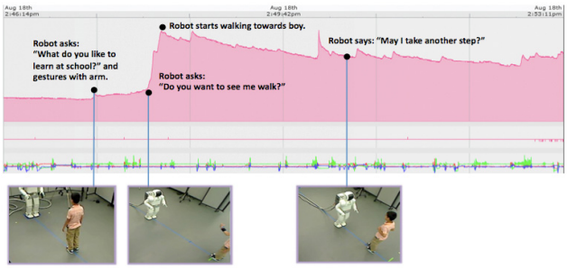
Captain May I -- Proxemics studies examining factors that influence distance between humanoid robots, children and adults during Human-Robot Interaction
Sandra Okita, Victor Ng-Thow-Hing, Ravi Kiran Sarvadevabhatla
In ACM/IEEE International Conference on Human-Robot Interaction (HRI), Boston, USA 2012
This paper examines how interaction distance between humans and robots vary due to factors such as age, initiator, gesture style, movement announcement.
Paper Abstract Bibtex
@inproceedings{Okita:2012:CMI:2157689.2157756,
author = {Okita, Sandra Y. and Ng-Thow-Hing, Victor and Sarvadevabhatla, Ravi Kiran},
title = {Captain May I?: Proxemics Study Examining Factors That Influence Distance Between Humanoid Robots, Children, and Adults, During Human-robot Interaction},
booktitle = {Proceedings of the Seventh Annual ACM/IEEE International Conference on Human-Robot Interaction},
series = {HRI '12},
year = {2012},
isbn = {978-1-4503-1063-5},
location = {Boston, Massachusetts, USA},
pages = {203--204},
numpages = {2},
url = {http://doi.acm.org/10.1145/2157689.2157756},
doi = {10.1145/2157689.2157756},
acmid = {2157756},
publisher = {ACM},
address = {New York, NY, USA},
keywords = {human robot interaction, proxemics study, young children},
}This proxemics study examines whether the physical distance between robots and humans differ based on the following factors: 1) age: children vs. adults, 2) who initiates the approach: humans approaching the robot vs. robot approaching humans, 3) prompting: verbal invitation vs. non-verbal gesture (e.g., beckoning), and 4) informing: announcement vs. permission vs. nothing. Results showed that both verbal and non-verbal prompting had significant influence on physical distance. Physiological data is also used to detect the appropriate timing of approach for a more natural and comfortable interaction.
2011
-
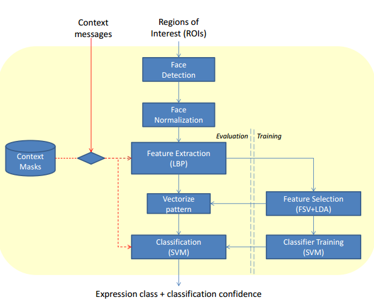
Adaptive Facial Expression Recognition Using Inter-modal Top-down context
Ravi Kiran Sarvadevabhatla, Victor Ng-Thow-Hing, Mitchel Benovoy, Sam Musallam
In International Conference on Multimodal Interaction(ICMI) , Alicante, Spain 2011
This paper describes an approach for facial expression recognition which takes the effect of other concurrently active modalities (e.g. talking while emoting the expression) into account.
Paper Abstract Bibtex
@inproceedings{Sarvadevabhatla:2011:AFE:2070481.2070488,
author = {Sarvadevabhatla, Ravi Kiran and Benovoy, Mitchel and Musallam, Sam and Ng-Thow-Hing, Victor},
title = {Adaptive Facial Expression Recognition Using Inter-modal Top-down Context},
booktitle = {Proceedings of the 13th International Conference on Multimodal Interfaces},
series = {ICMI '11},
year = {2011},
isbn = {978-1-4503-0641-6},
location = {Alicante, Spain},
pages = {27--34},
numpages = {8},
url = {http://doi.acm.org/10.1145/2070481.2070488},
doi = {10.1145/2070481.2070488},
acmid = {2070488},
publisher = {ACM},
address = {New York, NY, USA},
keywords = {context, facial expression recognition, human-computer interaction, mask, multi-modal},
}The role of context in recognizing a person's affect is being increasingly studied. In particular, context arising from the presence of multi-modal information such as faces, speech and head pose has been used in recent studies to recognize facial expressions. In most approaches, the modalities are independently considered and the effect of one modality on the other, which we call inter-modal influence (e.g. speech or head pose modifying the facial appearance) is not modeled. In this paper, we describe a system that utilizes context from the presence of such inter-modal influences to recognize facial expressions. To do so, we use 2-D contextual masks which are activated within the facial expression recognition pipeline depending on the prevailing context. We also describe a framework called the Context Engine. The Context Engine offers a scalable mechanism for extending the current system to address additional modes of context that may arise during human-machine interactions. Results on standard data sets demonstrate the utility of modeling inter-modal contextual effects in recognizing facial expressions.
2010
-

Extended duration human-robot interaction: tools and analysis
Ravi Kiran Sarvadevabhatla, Victor Ng-Thow-Hing, Sandra Okita
In IEEE International Symposium on Robot and Human Interactive Communication (RO-MAN), Viareggio, Italy 2010
Paper Abstract Bibtex
@inproceedings{sarvadevabhatla2010extended,
title={Extended duration human-robot interaction: tools and analysis},
author={Sarvadevabhatla, Ravi Kiran and Ng-Thow-Hing, Victor and Okita, Sandra},
booktitle={19th International Symposium in Robot and Human Interactive Communication},
pages={7--14},
year={2010},
organization={IEEE}
}Extended human-robot interactions possess unique aspects which are not exhibited in short-term interactions spanning a few minutes or extremely long-term spanning days. In order to comprehensively monitor such interactions, we need special recording mechanisms which ensure the interaction is captured at multiple spatio-temporal scales, viewpoints and modalities(audio, video, physio). To minimize cognitive burden, we need tools which can automate the process of annotating and analyzing the resulting data. In addition, we also require these tools to be able to provide a unified, multi-scale view of the data and help discover patterns in the interaction process. In this paper, we describe recording and analysis tools which are helping us analyze extended human-robot interactions with children as subjects. We also provide some experimental results which highlight the utility of such tools.
2009
-

Panoramic Attention for Humanoid Robots
Ravi Kiran Sarvadevabhatla, Victor Ng-Thow-Hing
In IEEE-RAS International Conference on Humanoid Robots (Humanoids) Paris, France 2009
Paper Abstract Bibtex
@inproceedings{sarvadevabhatla2009panoramic,
title={Panoramic attention for humanoid robots},
author={Sarvadevabhatla, Ravi Kiran and Ng-Thow-Hing, Victor},
booktitle={2009 9th IEEE-RAS International Conference on Humanoid Robots},
pages={215--222},
year={2009},
organization={IEEE}
}In this paper, we present a novel three-layer model of panoramic attention for our humanoid robot. In contrast to similar architectures employing coarse discretizations of the panoramic field, saliencies are maintained only for cognitively prominent entities(e.g. faces). In the absence of attention triggers, an idle-policy makes the humanoid span the visual field of panorama imparting a human-like idle gaze while simultaneously registering attention-worthy entities. We also describe a model of cognitive panoramic habituation which maintains entity-specific persistence models, thus imparting lifetimes to entities registered across the panorama. This mechanism enables the memories of entities in the panorama to fade away, creating a human-like attentional effect. We describe scenarios demonstrating the aforementioned aspects. In addition, we present experimental results which demonstrate how the cognitive filtering aspect of our model reduces processing time and false-positive rates for standard entity related modules such as face-detection and recognition.
-

Learning Together: ASIMO Developing an Interactive Learning Partnership with Children
Sandra Okita, Victor Ng-Thow-Hing, Ravi Kiran Sarvadevabhatla
In IEEE International Symposium on Robot and Human Interactive Communication (RO-MAN), Toyama, Japan 2009
Paper Abstract Bibtex
@inproceedings{okita2009learning,
title={Learning together: ASIMO developing an interactive learning partnership with children},
author={Okita, Sandra Y and Ng-Thow-Hing, Victor and Sarvadevabhatla, Ravi},
booktitle={RO-MAN 2009-The 18th IEEE International Symposium on Robot and Human Interactive Communication},
pages={1125--1130},
year={2009},
organization={IEEE}
}Humanoid robots consist of biologically inspired features, human-like appearance, and intelligent behavior that naturally elicit social responses. Complex interactions are now possible, where children interact and learn from robots. A pilot study attempted to determine which features in robots led to changes in learning and behavior. Three common learning styles, lecture, cooperative, and self-directed, were implemented into ASIMO to see if children can learn from robots. General features such as monotone robot-like voice and human-like voice were compared. Thirty-seven children between the ages 4-to 10- years participated in the study. Each child engaged in a table-setting task with ASIMO that exhibited different learning styles and general features. Children answered questions in relation to a table-setting task with a learning measure. Promissory evidence shows that learning styles and general features matter especially for younger children.
2008
-

The memory game: Creating a human-robot interactive scenario for ASIMO
Victor Ng-Thow-Hing, Jongwoo Lim, Joel Wormer, Ravi Kiran Sarvadevabhatla, Carlos Rocha, Kikuo Fujimura, Yoshiaki Sakagami
In IEEE/RSJ International Conference on Intelligent Robots and Systems (IROS) Nice, France 2008
Paper Abstract Bibtex
@inproceedings{ng2008memory,
title={The memory game: Creating a human-robot interactive scenario for ASIMO},
author={Ng-Thow-Hing, Victor and Lim, Jongwoo and Wormer, Joel and Sarvadevabhatla, Ravi Kiran and Rocha, Carlos and Fujimura, Kikuo and Sakagami, Yoshiaki},
booktitle={2008 IEEE/RSJ International Conference on Intelligent Robots and Systems},
pages={779--786},
year={2008},
organization={IEEE}
}We present a human-robot interactive scenario consisting of a memory card game between Hondapsilas humanoid robot ASIMO and a human player. The game features perception exclusively through ASIMOpsilas on-board cameras and both reactive and proactive behaviors specific to different situational contexts in the memory game. ASIMO is able to build a dynamic environmental map of relevant objects in the game such as the table and card layout as well as understand activities from the player such as pointing at cards, flipping cards and removing them from the table. Our system architecture, called the Cognitive Map, treats the memory game as a multi-agent system, with modules acting independently and communicating with each other via messages through a shared blackboard system. The game behavior module can model game state and contextual information to make decisions based on different pattern recognition modules. Behavior is then sent through high-level command interfaces to be resolved into actual physical actions by the robot via a multi-modal communication module. The experience gained in modeling this interactive scenario will allow us to reuse the architecture to create new scenarios and explore new research directions in learning how to respond to new interactive situations.
2005
-
Recognizing Human Activities from Constituent Actions
Ravi Kiran Sarvadevabhatla, Karteek Alahari, C.V. Jawahar
In National Conference on Communications (NCC), Kharagpur, India 2005
Paper Abstract Bibtex
@inproceedings{activity05,
title={Recognizing Human Activities from Constituent Actions},
author={Ravi Kiran Sarvadevabhatla, Karteek Alahari, C.V. Jawahar},
booktitle={National Conference on Communications},
pages={351--355},
year={2005},
organization={IEEE}
Many of the human activities such as Jumping, Squatting have a correlated spatiotemporal structure. They are composed of homogeneous units. These units, which we refer to as actions, are often common to more than one activity. Therefore, it is essential to have a representation which can capture these activities effectively. To develop this, we model the frames of activities as a mixture model of actions and employ a probabilistic approach to learn their low-dimensional representation. We present recognition results on seven activities performed by various individuals. The results demonstrate the versatility and the ability of the model to capture the ensemble of human activities.
2003
-
A Bilingual OCR for Hindi-Telugu Documents and its Applications
C.V. Jawahar, MNSSK Pavan Kumar, Ravi Kiran Sarvadevabhatla
In Seventh International Conference on Document Analysis and Recognition ( ICDAR ), Edinburgh, UK 2003
Paper Abstract Bibtex
@inproceedings{Jawahar:2003:BOH:938979.939243,
author = {Jawahar, C. V. and Kumar, M. N. S. S. K. Pavan and Kiran, S. S. Ravi Kiran} ,
title = {A Bilingual OCR for Hindi-Telugu Documents and Its Applications},
booktitle = {Proceedings of the Seventh International Conference on Document Analysis and Recognition - Volume 1},
series = {ICDAR '03},
year = {2003},
isbn = {0-7695-1960-1},
pages = {408--},
url = {http://dl.acm.org/citation.cfm?id=938979.939243},
acmid = {939243},
publisher = {IEEE Computer Society},
address = {Washington, DC, USA},
}This paper describes the character recognition processfrom printed documents containing Hindi and Telugu text. Hindi and Telugu are among the most popular languages in India. The bilingual recognizer is based on Principal Component Analysis followed by support vector classification. This attains an overall accuracy of approximately 96.7%. Extensive experimentation is carried out on an independent test set of approximately 200000 characters. Applications based on this OCR are sketched.
-
-
-
-
-
-
-
-
-
-
-
-
-
-
-
-
-
-
-
-
-
-
-
-
-
-
-
-
-
-
-
-
-
-
-
-
-
-
-
-
-
-
-
-
-
-
-
-
-
-
-
-